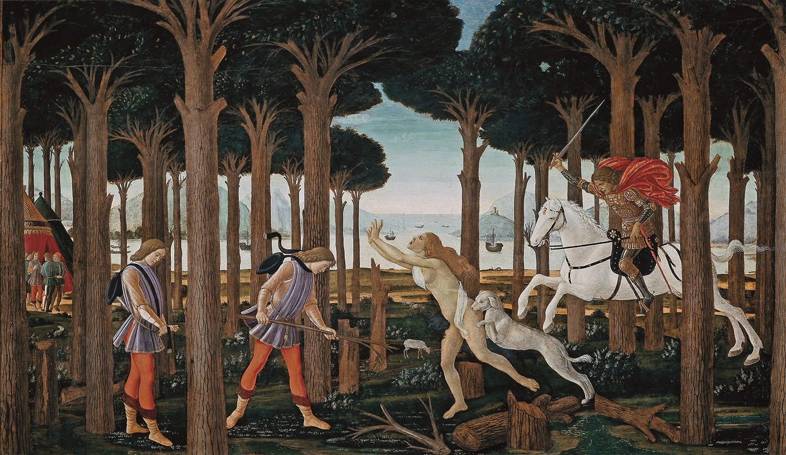
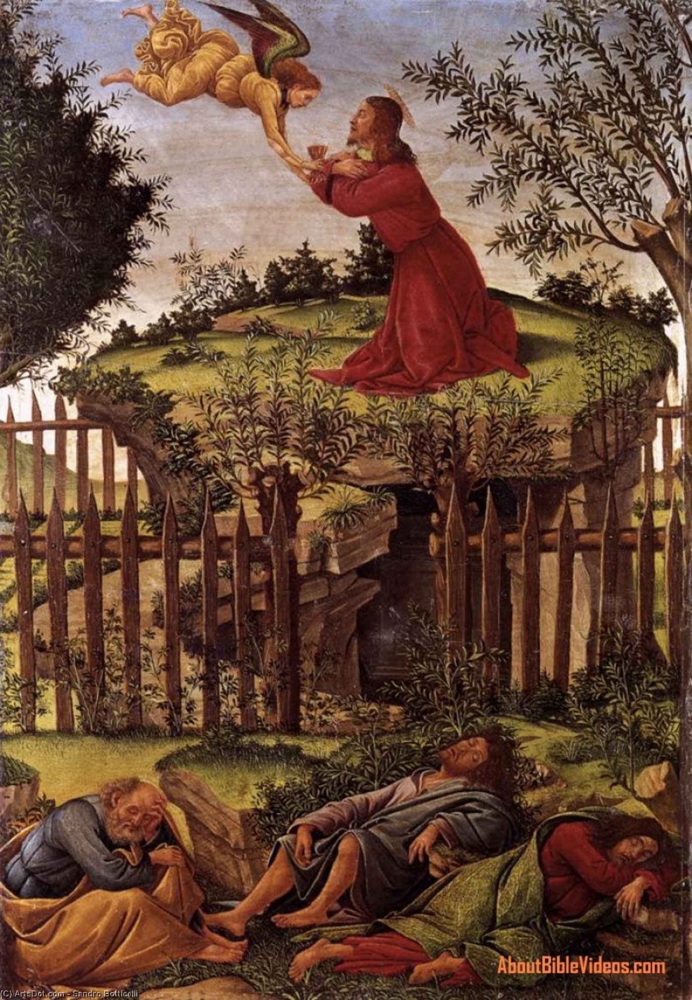
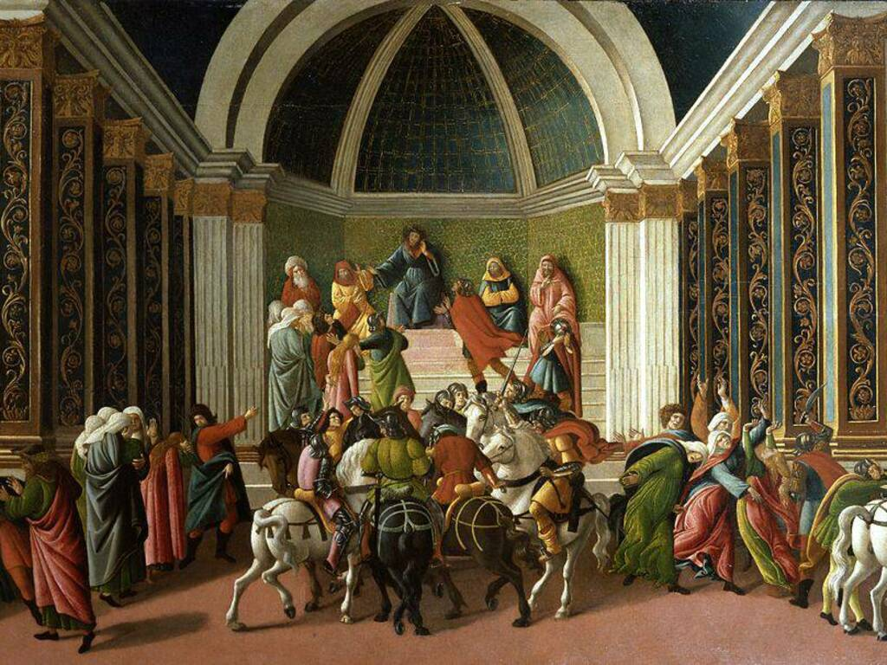
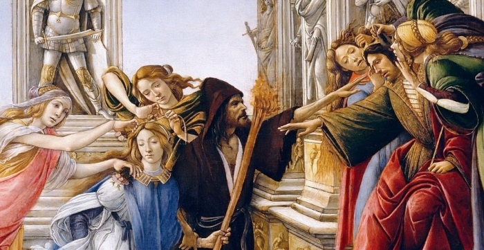
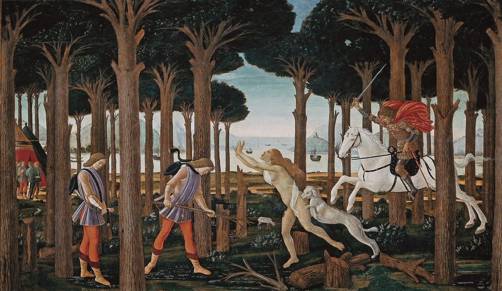
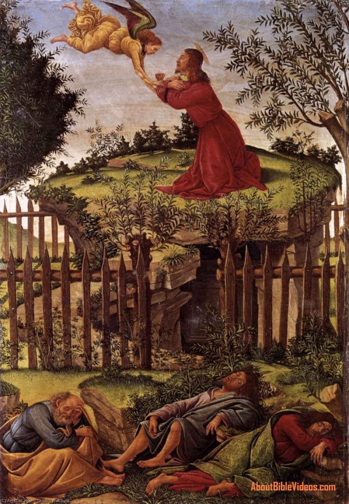
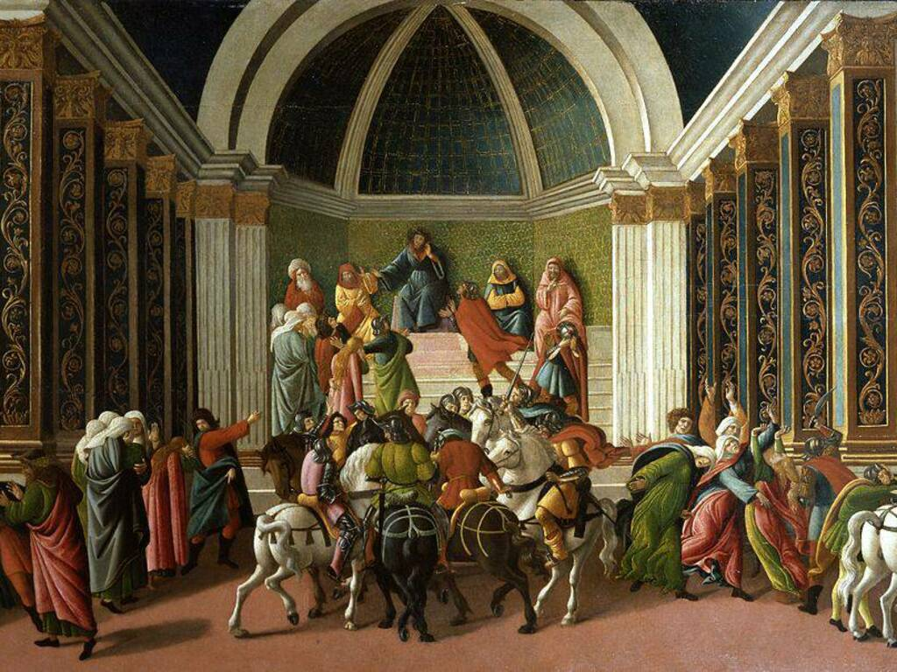
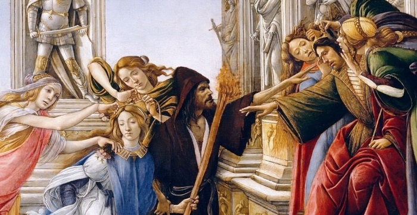

Alessandro di Mariano di Vanni Filipepi, conosciuto col nome d'arte di Sandro Botticelli (Firenze, 1º marzo 1445 – Firenze, 17 maggio 1510), è stato un pittore italiano inquadrabile nella corrente artistica del Rinascimento. In un'età dell'oro per il mondo dell'arte, il pittore ebbe una formazione di scuola fiorentina sotto Filippo Lippi e con il patronato della famiglia Medici, riuscendo a sviluppare uno stile elegante che proponeva un nuovo modello di bellezza ideale e che incarnava i gusti e la raffinatezza della società dell'epoca. La sua arte subì anche l'influenza di Andrea del Verrocchio e dei fratelli Antonio e Piero del Pollaiolo.
 



Home




Home